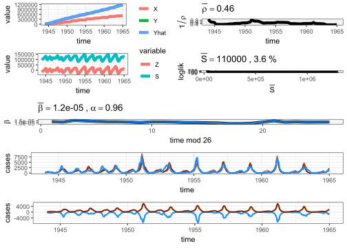

library(tsiR)3 tsiR
TSIR stands for Time series Susceptible-Infected-Recovered model.
Fitting SIR-type models is challenging due to (Becker & Grenfell, 2017):
- Only one state variable (the number of cases over time) is observed.
- Substantial under-reporting of disease incidence.
- The model is a continuous-time process, whereas the data are discretely collected weekly or monthly.
The TSIR handle (2) by reconstructing the susceptible dynamics, and (3) by switching continuous to discrete time with an assumption such that the infectious period is equal to data collecting interval.
3.1 Assumptions
The TSIR model relies on two main assumptions (Becker & Grenfell, 2017):
- Infectious period is fixed at the sampling interval of the data (e.g., bi-weekly for measles). The time step of the model is equal to the infectious period.
- Over a long enough time (e.g., 10-20 years), the sum of births and cases should be approximately equal due to the high infectivity of pathogens such as measles and other childhood infections, in the pre-vaccine era.
3.2 Model
\[\mathbb{E}(I_{t + 1}) = \beta_{t + 1} S_t I_t^{\alpha}\]
Explain
This equation describes the transmission through the multiplicative interaction between susceptible and infected individuals (Finkenstädt & Grenfell, 2000).
\[I_{t + 1} = \beta_{t + 1} S_t^{\alpha_1} I_t^{\alpha_2} \epsilon_t\]
- Susceptible (\(S_t\)) meet infectious individuals (\(I_t\)) with contact rate \(\beta_{t + 1}\).
- \(\alpha_1\) and \(\alpha_2\) are mixing parameters of the contact process, such that \(\alpha_1 = \alpha_2 = 1\) is the homogeneous mixing.
- \(\epsilon_t\) is the noise, \(\mathbb{E}\{ log(\epsilon_t) \} = 0\) and \(\mathbb{V}\{ log(\epsilon_t) \} = 0\).
\[S_{t + 1} = B_{t + 1} + S_t - I_{t + 1}\]
Explain
Susceptible class in the next time step recruited by births (\(B_{t + 1}\)) and depleted by the infected individuals leaving the class (\(I_{t + 1}\)) (Finkenstädt & Grenfell, 2000).
3.3 tsiR framework
3.3.1 Reconstruct susceptible dynamics
Fit a regression between cumulative cases and cumulative births. The slope is assumed to be the report rate \(\rho_t\) (rho) (Du et al., 2017), the residuals is assumed to be the shape of the susceptible dynamics (\(Z_t\)).
Explain
Let \(\rho_t\) be the reporting rate and assume \(\rho_t\) has a probability function with expected value \(\mathbb{E}(\rho_t) = \rho\).
\[I_t = \rho_t C_t\]
- \(I_t\): the number of true cases.
- \(C_t\): the number of reported cases.
The number of true cases is under-reported if \(\rho_t > 1\) and is fully reported if \(\rho_t = 1\).
Replace \(I_t\) here:
\[S_t = B_t + S_{t - 1} - I_t\]
\[S_t = B_t + S_{t - 1} - \rho_t C_t\]
Let \(\mathbb{E}(S_t) = \bar{S}\) so that \(S_t = \bar{S} + Z_t\), with \(\mathbb{E}(Z_t) = 0\). The deviations \(Z_t\) from their mean follow the same recursive relationship as \(S_t\).
\[Z_t = B_t + Z_{t - 1} - \rho_t C_t\]
A successive iteration to compute \(Z_t\) from \(Z_0\) gives:
\[Z_t = \sum_{i = 1}^{t} B_i + Z_0 - \sum_{i = 1}^{t} \rho_i C_i\]
- \(\sum_{i = 1}^{t} B_i\): cumulative births.
- \(\sum_{i = 1}^{t} C_i\): cumulative reported cases.
For ease of notation, let \(Y_\text{cumBirths} = \sum_{i = 1}^{t} B_i\), \(X_\text{cumCases} = \sum_{i = 1}^{t} C_i\), rearrange that equation so that we have:
\[Y_\text{cumBirths} = \rho X_\text{cumCases} + Z_t - Z_0\]
If we assume a constant reporting rate, this equation is a simple linear regression relationship between cumulative births \(Y\) and cumulative cases \(X\).
3.3.2 Estimate parameters
Set the expectation to the mean, then take log of both sides:
\[\mathbb{E}(I_{t + 1}) = \beta_{t + 1} S_t I_t^{\alpha}\]
\[log I_{t + 1} = log \beta_{t + 1} + log(Z_t + \bar{S}) + \alpha log I_t\]
- \(\bar{S}\): mean susceptible individuals across the time-series. \(Z_t\) is the residuals or the shape of the susceptible dynamics, so \(Z_t + \bar{S} = S_t\)
- \(\beta_t\): contact rate at time t.
- \(\alpha\): describes the epidemic saturation, a correction factor for switching from continuous to discrete time.
3.4 Basic reproduction number
\[R_0 = \beta \times \bar{S}\]
3.5 Code
The London measles data is available in the tsiR package.
LondonMeas <- twentymeas[["London"]]
head(LondonMeas)The data frame containing cases and interpolated births and populations.
plotdata(LondonMeas)LondonRes <- runtsir(data = LondonMeas, IP = 2, xreg = "cumcases", regtype = "gaussian", alpha = NULL, sbar = NULL, method = "negbin", nsim = 100, family = "gaussian", link = "identity") alpha mean beta mean rho mean sus
9.60e-01 1.19e-05 4.57e-01 1.14e+05
prop. init. sus. prop. init. inf.
3.01e-02 6.12e-05 alpha: describes the epidemic saturation, a correction factor for switching from continuous to discrete time.mean beta: mean of the contact rate across the time-series.mean rho: mean of the report rate across the time-series.mean sus: mean of the number of susceptible across the time-series.prop. init. sus.: proportion of the initial susceptible individuals.prop. init. inf.: proportion of the initial infectious individuals.
3.5.1 Reconstruct susceptible dynamics
In this step we compute the reported rate using cumulative births and cumulative reported cases.
\[Y_\text{cumBirths} = \rho X_\text{cumCases} + Z_t - Z_0\]
plotregression(LondonRes)plotrho(LondonRes)3.5.2 Estimate parameters
Having \(\rho\), we adjust the \(I_t\) to estimate other parameters.
\[I_t = \rho_t C_t\] \[log I_{t + 1} = log \beta_{t + 1} + log(Z_t + \bar{S}) + \alpha log I_t\]
plotres(LondonRes)Warning in geom_line(data = dat$res, aes_string(x = "time", y = "cases", :
Ignoring unknown aesthetics: fill